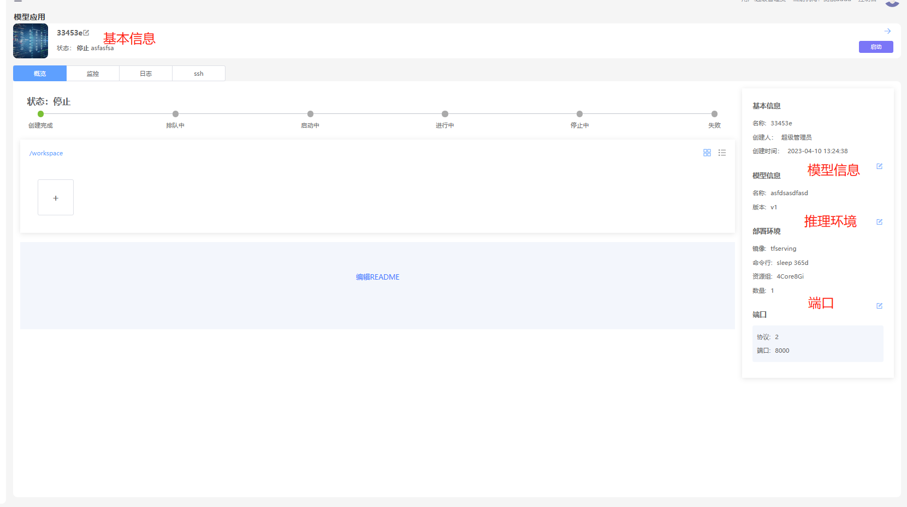

简介
模型应用即将模型管理中的模型部署为在线服务，从而以REST API或者网页的方式提供推理预测能力
创建
操作步骤
1、进入“模型应用”界面
2、点击“新增”按钮
3、填写表单信息
| 参数 | 描述 |
| 名称 | 模型名称5-40之间，必填 |
| 描述 | 模型的描述，必填 |
| 模型 | 模型管理中的模型 |
| 版本 | 模型管理中的版本 |
| 推理环境 | 模型运行的环境 |
| 启动命令行 | 运行模型推理的命令行 |
| 资源组 | 模型运行需要资源配置组 |
| 数量 | 模型运行的容器数量（支持高可用） |
| 端口 | 应用需要暴露的端口 |
4、点击“下一步”按钮，进入文件上传界面
5、上传本地的文件，支持文件夹和文件上传。
6、点击“确定”按钮
7、模型应用创建成功以后，点击“立即前往”，进入“详情页”
修改
1、进入“模型应用”界面
2、选中记录进入"详情页”

修改基本信息
1、点击模型应用管理“详情页”名称旁边的修改按钮，弹出对话框，修改基本信息
2、填写修改的表单信息
3、点击“确定”按钮，保存修改记录
修改模型
1、点击模型信息旁边的修改按钮，弹出对话框。
2、修改模型
3、点击”确定“，保存修改信息
修改推理环境
1、点击推理环境旁边的修改按钮，弹出对话框。
2、修改推理环境
3、点击”确定“，保存修改信息
修改描述信息
1、 模型信息描述信息采用Markdown格式、点击修改按钮可以进行在线编辑
追加文件
1、在工作区中点击“+”按钮进行追加文件
删除文件
1、 选中文件，右键弹出菜单，点击“删除”按钮，删除文件
删除
1、进入“模型应用”界面
2、选中记录，移动到删除按钮旁，会弹出删除按钮。
3、弹出确认删除的对话框，点击“确认”按钮，删除记录